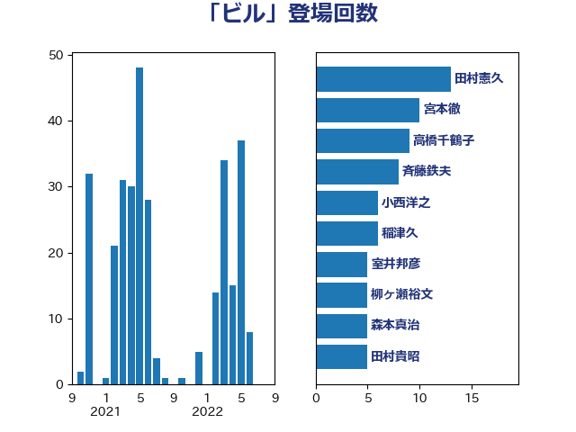

単語「ビル」

| 田村憲久 | 自由民主党 | 13 回 |
| 宮本徹 | 日本共産党 | 10 回 |
| 高橋千鶴子 | 日本共産党 | 9 回 |
| 斉藤鉄夫 | 公明党 | 8 回 |
| 小西洋之 | 立憲民主党 | 6 回 |
| 稲津久 | 公明党 | 6 回 |
| 室井邦彦 | 日本維新の会 | 5 回 |
| 柳ヶ瀬裕文 | 日本維新の会 | 5 回 |
| 森本真治 | 立憲民主党 | 5 回 |
| 田村貴昭 | 日本共産党 | 5 回 |
| 美延映夫 | 日本維新の会 | 5 回 |
| 井上哲士 | 日本共産党 | 4 回 |
| 小泉進次郎 | 自由民主党 | 4 回 |
| 岡本三成 | 公明党 | 4 回 |
| 田村まみ | 国民民主党 | 4 回 |
| 赤羽一嘉 | 公明党 | 4 回 |
| 金子恭之 | 自由民主党 | 4 回 |
| 阿部弘樹 | 日本維新の会 | 4 回 |
| 伊藤岳 | 日本共産党 | 3 回 |
| 塩田博昭 | 公明党 | 3 回 |
| 小林茂樹 | 自由民主党 | 3 回 |
| 田村智子 | 日本共産党 | 3 回 |
| 若松謙維 | 公明党 | 3 回 |
| 萩生田光一 | 自由民主党 | 3 回 |
| 野村哲郎 | 自由民主党 | 3 回 |
| 青木愛 | 立憲民主党 | 3 回 |
| 伊藤渉 | 公明党 | 2 回 |
| 大野泰正 | 自由民主党 | 2 回 |
| 小林鷹之 | 自由民主党 | 2 回 |
| 小田原潔 | 自由民主党 | 2 回 |
| 山本剛正 | 日本維新の会 | 2 回 |
| 山添拓 | 日本共産党 | 2 回 |
| 岩渕友 | 日本共産党 | 2 回 |
| 市村浩一郎 | 日本維新の会 | 2 回 |
| 後藤祐一 | 立憲民主党 | 2 回 |
| 徳永エリ | 立憲民主党 | 2 回 |
| 杉本和巳 | 日本維新の会 | 2 回 |
| 柴田巧 | 日本維新の会 | 2 回 |
| 水岡俊一 | 立憲民主党 | 2 回 |
| 清水真人 | 自由民主党 | 2 回 |
| 笠井亮 | 日本共産党 | 2 回 |
| 茂木敏充 | 自由民主党 | 2 回 |
| 西村康稔 | 自由民主党 | 2 回 |
| 足立敏之 | 自由民主党 | 2 回 |
| 麻生太郎 | 自由民主党 | 2 回 |
| たがや亮 | れいわ新選組 | 1 回 |
| 上田清司 | 国民民主党 | 1 回 |
| 中谷一馬 | 立憲民主党 | 1 回 |
| 井上信治 | 自由民主党 | 1 回 |
| 伊佐進一 | 公明党 | 1 回 |
| 加藤勝信 | 自由民主党 | 1 回 |
| 勝俣孝明 | 自由民主党 | 1 回 |
| 古川直季 | 自由民主党 | 1 回 |
| 古賀友一郎 | 自由民主党 | 1 回 |
| 吉田久美子 | 公明党 | 1 回 |
| 坂本哲志 | 自由民主党 | 1 回 |
| 塩川鉄也 | 日本共産党 | 1 回 |
| 大塚耕平 | 国民民主党 | 1 回 |
| 寺田静 | 無所属 | 1 回 |
| 小宮山泰子 | 立憲民主党 | 1 回 |
| 小里泰弘 | 自由民主党 | 1 回 |
| 山下芳生 | 日本共産党 | 1 回 |
| 山口壯 | 自由民主党 | 1 回 |
| 岩田和親 | 自由民主党 | 1 回 |
| 岩谷良平 | 日本維新の会 | 1 回 |
| 川合孝典 | 国民民主党 | 1 回 |
| 川田龍平 | 立憲民主党 | 1 回 |
| 工藤彰三 | 自由民主党 | 1 回 |
| 平山佐知子 | 無所属 | 1 回 |
| 平木大作 | 公明党 | 1 回 |
| 後藤茂之 | 自由民主党 | 1 回 |
| 日下正喜 | 公明党 | 1 回 |
| 松原仁 | 立憲民主党 | 1 回 |
| 柳本顕 | 自由民主党 | 1 回 |
| 柿沢未途 | 無所属 | 1 回 |
| 浅野哲 | 国民民主党 | 1 回 |
| 浜野喜史 | 国民民主党 | 1 回 |
| 渡辺周 | 立憲民主党 | 1 回 |
| 田名部匡代 | 立憲民主党 | 1 回 |
| 田嶋要 | 立憲民主党 | 1 回 |
| 畦元将吾 | 自由民主党 | 1 回 |
| 石井正弘 | 自由民主党 | 1 回 |
| 福山哲郎 | 立憲民主党 | 1 回 |
| 穂坂泰 | 自由民主党 | 1 回 |
| 羽田次郎 | 立憲民主党 | 1 回 |
| 藤田文武 | 日本維新の会 | 1 回 |
| 谷公一 | 自由民主党 | 1 回 |
| 赤木正幸 | 日本維新の会 | 1 回 |
| 逢坂誠二 | 立憲民主党 | 1 回 |
| 野間健 | 立憲民主党 | 1 回 |
| 鈴木憲和 | 自由民主党 | 1 回 |
| 青山大人 | 立憲民主党 | 1 回 |
| 高木啓 | 自由民主党 | 1 回 |
| 高橋光男 | 公明党 | 1 回 |